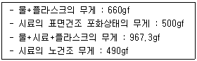
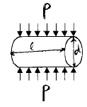
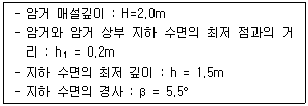
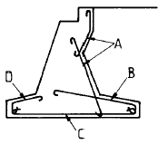
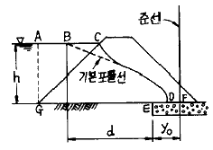
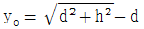
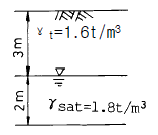
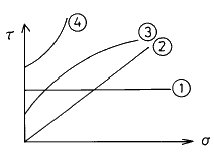

건설재료시험산업기사 (2002-03-10 기출문제)
1과목: 콘크리트공학
1. 콘크리트 공시체의 지간 3등분점 휨시험에서 공시체의 파괴가 지간 3등분점 외부에서 발생할 경우, 파괴단면과 3등분점과의 거리가 지간의 얼마 이상 벗어나면 시험결과를 무효로 하는가?
- 3%
- 5%
- 8%
- 10%
(정답률: 알수없음)

2. 알칼리골재반응을 막기 위한 대책으로 옳지 않은 것은 어느 것인가?
- 반응성 골재를 사용하지 않는다.
- 빈배합의 콘크리트로 시공한다.
- 0.6%이하의 알칼리량을 함유한 시멘트를 사용한다.
- 적당한 포졸란 또는 고로 슬래그를 사용한다.
(정답률: 알수없음)
3. 프리스트레스트 콘크리트에서 사용하는 PS강재의 종류가 아닌 것은?
- 쉬스(sheath)
- 강선(steel wire)
- 강연선(steel strand)
- 강봉(steel bar)
(정답률: 알수없음)
4. 벽 또는 기둥 등에서 콘크리트를 쳐 올라가는 속도는 30분에 얼마이하로 하는 것이 좋은가?
- 0.5 ∼ 1 m
- 1.0 ∼ 1.5 m
- 1.5 ∼ 2.0 m
- 2.0 ∼ 2.5 m
(정답률: 59%)
5. 한중콘크리트에 대한 설명중 옳지 않은 것은?
- 하루의 평균기온이 4℃ 이하로 예상될 때에 시공하는 콘크리트이다.
- 단위수량은 소요의 워커빌리티를 유지할 수 있는 범위내에서 될 수 있는대로 적게해야 한다.
- 심한 기상작용을 받는 콘크리트는 소요의 압축강도가 얻어질 때까지는 콘크리트의 온도를 5℃ 이상으로 유지해야 한다.
- 물, 시멘트 및 골재를 가열하여 재료의 온도를 높일 경우에는 균일하게 가열하여 항상 소요온도의 재료가 얻어질 수 있도록 해야 한다.
(정답률: 알수없음)
6. AE콘크리트에 대한 다음의 설명중 틀린 것은?
- 공기량이 증가하면 강도는 증가한다.
- 동결융해에 대한 저항성이 커진다.
- 굳지않은 콘크리트의 유동성을 증대시킨다.
- 동일슬럼프에 대한 사용수량을 감소시킨다.
(정답률: 67%)
7. 매스콘크리트에 관한 설명 중 틀린 것은?
- 내부구속에 의한 온도균열은 콘크리트의 내부와 표면부의 온도차에 의해 발생되는 것이다.
- 외부구속에 의한 온도균열은 부재 전체의 온도변화에 의한 신축이 구속됨으로써 발생되는 것이다.
- 온도균열지수는 시멘트의 수화열에 의한 온도응력을 콘크리트의 인장강도로 나눈 값이다.
- 콘크리트 온도변화의 계산에는 콘크리트 단열온도 상승량이 사용된다.
(정답률: 65%)
8. 해수를 철근 콘크리트 혼합수로 사용할 수 없는 가장 큰 이유는 다음중 어느 것인가?
- 수화열의 발생이 크므로
- 철근을 부식시키므로
- 콘크리트의 강도가 저하되므로
- 콘크리트의 응결을 지연시키므로
(정답률: 70%)
9. 배치플랜트에서 콘크리트 재료의 계량에 대한 설명으로 틀린 것은?
- 시멘트의 계량은 무게로 하고, 계량오차는 1회 계량 무게의 1% 이내이다.
- 골재의 계량은 무게로 하고, 계량오차는 1회 계량 무게의 3% 이내이다.
- 혼화재의 계량은 무게로 하고, 계량오차는 1회 계량 무게의 2% 이내이다.
- 혼화제의 계량은 무게로 하고, 계량오차는 1회 계량 무게의 2% 이내이다.
(정답률: 알수없음)
10. 다음은 잔골재의 비중시험결과이다. 이때 표면건조포화상태의 비중은 얼마인가?

- 2.54
- 2.68
- 2.59
- 2.51
(정답률: 19%)
11. 조강포틀랜드 시멘트를 사용한 콘크리트의 양생시 습윤상태의 보호기간은 얼마 이상을 표준으로 하는가?
- 1일
- 3일
- 5일
- 7일
(정답률: 75%)
12. 압축강도로부터 물-시멘트비를 정할 경우 시험값이 설계 기준강도를 밑도는 확률을 몇 % 이하로 시방서에서는 규정하고 있는가?
- 2%
- 3%
- 5%
- 10%
(정답률: 알수없음)
13. 콘크리트 시방배합설계에서 단위골재의 절대용적이 0.689m3이고 잔골재율이 41%, 잔골재의 비중이 2.60일 때 단위 잔골재량으로 옳은 것은?
- 734 kgf
- 763 kgf
- 786 kgf
- 812 kgf
(정답률: 알수없음)
14. 콘크리트를 친 후 습윤양생을 하는 경우 습윤상태의 보호 기간은 보통포틀랜드 시멘트를 사용한 경우 얼마 이상을 표준으로 하나?
- 1 일
- 3 일
- 5 일
- 7 일
(정답률: 91%)
15. 다음 중 숏크리트(Shotcrete)의 장점으로 잘못된 것은?
- 거푸집이 불필요하고 급속시공이 가능하다.
- 윗쪽, 옆을 포함한 임의 방향으로 시공이 가능하다.
- 급결제의 첨가로 조기에 강도를 발현시킬 수 있다.
- 일반콘크리트에 비해 수밀성이 높은 콘크리트를 얻을 수 있다.
(정답률: 59%)
16. 그림과 같이 원주형의 콘크리트 공시체를 수평으로 재하하여 얻는 최대하중으로 무엇을 구하고자 하는가?

- 압축강도
- 인장강도
- 전단강도
- 지압강도
(정답률: 알수없음)
17. 단위용적중량이 1500 kgf/m3, 비중이 2.5 인 굵은골재의 실적률은?
- 30 %
- 40 %
- 60 %
- 70 %
(정답률: 50%)
18. 외기온도가 25℃를 넘을 때 양질의 지연제 등을 사용하지 않는다면 일반적으로 비비기로부터 치기가 끝날 때까지의 시간은 얼마로 제한되는가?
- 30 분
- 60 분
- 90 분
- 120 분
(정답률: 55%)
19. 다음 중 철근의 부식 정도를 측정하기 위한 비파괴 시험법은?
- 반발경도법
- 모르타르바법
- 자연전극전위법
- 페놀프탈레인 용액 분무시험법
(정답률: 50%)
20. 크리프계수에 대한 정의로 옳은 것은?
- 크리프계수 = 크리프변형률 / 소성변형률
- 크리프계수 = 크리프변형률 / 탄성변형률
- 크리프계수 = 탄성변형률 / 크리프변형률
- 크리프계수 = 소성변형률 / 크리프변형률
(정답률: 알수없음)
2과목: 건설재료 및 시험
21. 시멘트 모르타르 흐름 시험은 다음 중 어느 시험을 하기 위한 시험인가?
- 시멘트 모르타르 응결시간시험
- 시멘트 모르타르 압축강도시험
- 시멘트 비중시험
- 안정성(Soundness)시험
(정답률: 0%)
22. 다음 중 아스팔트의 침입도(경도)시험 조건으로 옳은 것은?
- 온도 25℃에서 200gf의 표준침을 5초동안 가하여 관입한 깊이를 나타낸것.
- 온도 25℃에서 100gf의 표준침을 5초동안 가하여 관입한 깊이를 나타낸것.
- 온도 25℃에서 100gf의 표준침을 10초동안 가하여 관입한 깊이를 나타낸것.
- 온도 30℃에서 100gf의 표준침을 5초동안 가하여 관입한 깊이를 나타낸것.
(정답률: 알수없음)
23. 콘크리트용 혼화재로서 플라이 애시(Fly-Ash)를 사용한 경우 효과로 잘못된 것은?
- 워커빌리티를 개선시킨다.
- 재료분리를 감소시킨다.
- 수화열이 저하된다.
- 조기강도가 증대된다.
(정답률: 알수없음)
24. 아스팔트 혼합물을 배합 설계할 때 필요치 않은 사항은?
- 침입도와 흐름값의 측정
- 골재의 비중과 흡수량의 측정
- 응결시간의 측정
- 마아샬(marshall)안정도 시험
(정답률: 62%)
25. 다음중 강재의 인장시험에서 알아내기 어려운 것은?
- 인장강도
- 비례한도
- 항복강도
- 인성한도
(정답률: 50%)
26. 다음 중 폭약으로 카알릿(carlit)를 사용할 수 없는 경우 는 어느 것인가?
- 암석, 경질토사 절취용
- 채석장에서 큰돌의 채취용
- 용수가 있는 터널공사의 발파용
- 갱외(坑外)의 암석절취용
(정답률: 84%)
27. 직경이 20cm, 길이 5m인 강봉에 축방향으로 50tonf의 인장력을 주어 지름이 0.1mm가 줄고 길이가 10mm 늘어난 경우의 이 재료의 프와송 수는 얼마인가?
- 0.25
- 2
- 4
- 8
(정답률: 46%)
28. 골재의 수량에서 공기중 건조상태에서 골재알이 표면 건조 포화상태로 되기까지 흡수된 물의 양은?
- 함수량
- 흡수량
- 표면수량
- 유효흡수량
(정답률: 39%)
29. 토목분야의 건설공사 품질시험기준 중 입도조정기층의 체가름 시험은 몇 m3 마다 1회이상 실시하여야 하는가?
- 1000 m3
- 2000 m3
- 3000 m3
- 4000 m3
(정답률: 37%)
30. 석재에 관한 다음 기술 중 틀린 것은?
- 비중이 클수록 강도가 크다.
- 흡수율이 높으면 내구성이 크다.
- 일반적으로 화성암이 수성암보다 강도가 높다.
- 석재의 종류에 따라 비중이 다르다.
(정답률: 64%)
31. 시멘트의 비중에 관한 다음 사항 중 옳지 않은 것은?
- 비중시험은 르샤틀리에 비중병으로 하며 시멘트의 시험표준량은 64g이다.
- 일반적으로 풍화된 시멘트는 비중이 증가된다.
- 비중은 일반적으로 석회나 알루미나 성분이 많으면 작아지고 실리카나 산화철이 많아지면 커진다.
- 보통 포틀랜드 시멘트의 평균 비중은 3.15정도이다.
(정답률: 알수없음)
32. 그라우팅(Grouing)용 혼화제로서의 필요한 성질 중 옳지 않은 것은?
- 단위수량이 작고, 블리딩이 작아야 한다.
- 그라우트를 수축시키는 성질이 있어야 한다.
- 재료의 분리가 생기지 않아야 한다.
- 주입하기 쉬어야 하며, 공기를 연행 시켜야 한다.
(정답률: 알수없음)
33. 수중불분리성 콘크리트용 혼화제를 사용한 콘크리트의 성질에 대한 설명 중 틀린 것은?
- 수중불분리성 혼화제를 사용한 콘크리트의 점성은 작아진다.
- 수중불분리성 혼화제를 사용한 콘크리트의 유동성은 커진다.
- 수중불분리성 혼화제를 사용한 콘크리트의 충전성은 커진다.
- 수중불분리성 혼화제를 사용한 콘크리트의 블리딩은 작아진다.
(정답률: 20%)
34. 콘크리트용 골재가 필요로 하는 성질중 틀린 것은?
- 물리적으로 안정하고 내구성이 클 것
- 모양이 입방체 또는 공모양에 가깝고 시멘트풀과의 부착력이 큰 약간 거친 표면을 가질 것
- 크고 작은 낱알의 크기의 차이없이 균등할 것
- 소요의 중량을 가질 것
(정답률: 75%)
35. 토목분야의 건설공사 품질시험기준 중 노체 흙의 시험종목이 아닌 것은?
- 함수량시험
- 평판재하시험
- 비중시험
- 다짐시험
(정답률: 17%)
36. 시멘트 모르타르(cement mortar)의 압축강도 시험을 위해 공시체 제작시에 필요한 시멘트와 표준사(모래)의 중량배합 비율은 얼마인가?
- 1 : 2.45
- 1 : 2.55
- 1 : 2.65
- 1 : 2.70
(정답률: 39%)
37. 다음과 같은 목재의 강도 중에서 가장 큰 것은?
- 섬유의 평행방향 압축강도
- 섬유의 직각방향 압축강도
- 섬유의 평행방향 인장강도
- 섬유의 직각방향 인장강도
(정답률: 50%)
38. 고무혼입 아스팔트를 스트레이트 아스팔트와 비교 했을 때의 설명 중 옳은 것은?
- 응집성 및 부착력이 크다.
- 감온성이 크다.
- 마찰계수가 작다.
- 탄성 및 충격저항이 작다.
(정답률: 알수없음)
39. 연화점은 시료를 규정 조건에서 가열하였을 때 시료가 연해져서 규정거리 몇 mm 처졌을 때의 온도인가?
- 20.4
- 25.4
- 30.4
- 35.4
(정답률: 64%)
40. 어떤 굵은골재의 단위용적 중량이 1.75tonf/m3이다. 이 골재의 비중이 2.6이라면 이 골재의 실적율은 약 얼마인가?
- 73%
- 64%
- 70%
- 67%
(정답률: 알수없음)
3과목: 건설시공학
41. 발파시 충전재로서 가장 많이 사용되는 것은?
- 자갈
- 모래
- 큰돌
- 시멘트
(정답률: 알수없음)
42. 발파에 의한 암석의 굴착방법중 빈구멍을 자유면으로 하여 평행폭파를 하는 것으로 버럭의 비산거리가 짧고 좁은 도갱에서의 긴 구멍의 발파에 편리한 방법은?
- 번컷
- 밴치컷
- 스윙컷
- 피라미드컷
(정답률: 19%)
43. 도로포장 두께를 결정하는 시험 방법이 아닌 것은?
- 평판재하시험
- CBR시험
- 벤켈먼빔시험
- 마아셜시험
(정답률: 50%)
44. 말뚝 끝이 견고한 지반에 도달하였을 때는 이것이 기둥작용을 한다. 이때의 말뚝은 어떤 말뚝인가?
- 지지말뚝
- 마찰말뚝
- 단독말뚝
- 군말뚝
(정답률: 50%)
45. 콘크리트댐의 시공에 관한 설명중 옳지 않은 것은?
- 1리프트의 높이는 1.5m이상, 2.0m이하를 표준으로 한다.
- 수평 시공이음 방법에는 경화전 처리법과 경화후 처리법이 있다.
- 콘크리트 냉각은 Pipe Cooling과 Pre–Cooling을 실시한다.
- 시멘트는 수화열이 큰 것을 사용한다.
(정답률: 알수없음)
46. 현장 콘크리트 말뚝(cast-in-place concrete pile)이 아닌 것은?
- Franky 말뚝
- Benoto 말뚝
- Pedestal 말뚝
- P.C 말뚝
(정답률: 39%)
47. 말뚝을 지반에 타설할 때 무진동, 무소음으로 윗쪽에 공간이 없을 때 쓰는 공법은?
- 타입법
- 사수법
- 압입법
- 진동법
(정답률: 50%)
48. 모양은 원형, 나팔형으로 되어 있고 자유낙하부, 연직갱부, 곡관부, 원형터널 등으로 되어 있으며, 유입여수토 터널내에 부압이 생기므로 설계관리상 주의하지 않으면 안되는 여수토는?
- 슈트식 여수토
- 사이펀 여수토
- 측수로 여수토
- 그롤리 홀 여수토
(정답률: 60%)
49. 사질토 재료로 하여 30,000m3의 쌓기를 할 경우의 굴착 및 운반토량은 얼마인가? (단, L=1.25, C=0.9)
- 굴착토량 : 33,333m3, 운반토량 : 41.666m3
- 굴착토량 : 34,333m3, 운반토량 : 43.666m3
- 굴착토량 : 36,333m3, 운반토량 : 45.666m3
- 굴착토량 : 38,333m3, 운반토량 : 47.666m3
(정답률: 46%)
50. 콘크리트 포장에서 콘크리트 슬래브의 표면 마무리의 종류가 아닌 것은?
- 초벌마무리
- 종벌마무리
- 평탄마무리
- 거친면마무리
(정답률: 20%)
51. 아스팔트 혼합물을 포설할 때 혼합물의 온도로 적당한 것은?
- 70℃
- 90℃
- 110℃
- 130℃
(정답률: 37%)
52. 보통 흙을 불도저로 작업할 때 작업거리가 40m이다. 이때 시간당 작업량은 얼마인가? (단, 전진속도 40m/min, 후진속도 100m/min, 기어조작시간 0.3분, 배토판 용량 2.0m3, 작업효율 0.6, 토량환산계수 0.8 이다.)
- 33.88m3
- 42.50m3
- 48.25m3
- 50.32m3
(정답률: 30%)
53. 토취장의 선정에 있어서 주의해야 할 사항으로 잘못된 것은?
- 토질이 양호하고 토량이 풍부할 것.
- 용수붕괴의 염려가 없고 배수가 좋은지형일 것.
- 흙쌓기할 구배에 대해서는 반드시 오르막 구배로 해야 한다.
- 운반로가 양호하고 싣기가 용이한 지형일 것.
(정답률: 알수없음)
54. 다음 흙쌓기의 방법중 한층의 두께를 90~120cm 정도로 하여 자연침하가 된 뒤 다음 층을 쌓는 방법으로 하천, 도로, 철도 등의 둑쌓기에 가장 적합한 공법은?
- 두꺼운층 쌓기법
- 얇은층 쌓기법
- 전방층 쌓기법
- 비계층 쌓기법
(정답률: 37%)
55. 다음과 같은 조건일 때 암거간 매설 거리는?

- 4.18m
- 6.23m
- 8.12m
- 10.18m
(정답률: 알수없음)
56. 점성토 및 아스팔트 포장끝손질에 주로 사용하면 알맞은 기계는?
- 타이어로울러
- 머캐덤로울러
- 탬핑로울러
- 탠덤로울러
(정답률: 42%)
57. Bar chart와 Net work기법의 설명중 옳지 않은 것은?
- Bar Chart는 개요파악이 쉽다.
- Net work는 작업사이의 종속관계가 명확하다.
- Bar chart는 공기에 영향을 주는 작업의 발견이 어렵다.
- Net work는 공정의 진행법 및 작업방법의 개선이 어렵다.
(정답률: 0%)
58. 터널계획 및 설계에 대한 다음 설명 중 옳지 않은 것은?
- 터널의 노선 선정은 지질이 양호하고 단층용수가 적은 곳을 선정해야 한다.
- 도로, 철도등의 터널 경사도는 가급적이면 수평으로 하는 것이 좋다.
- 내공단면은 지질이 다소 양호할 정도이면 마제형 단면으로 하는 것이 좋다.
- 터널의 동바리공 라이닝은 편압(編壓)이 생기지 않도록 좌우 대칭인 토압이 생기도록 설계해야 한다.
(정답률: 54%)
59. 역 T형 교대를 설계할 경우 주철근으로 설계하는 위치를 제시한 것이다. 다음 그림에서 주철근이 아닌 것은?

- A
- B
- C
- D
(정답률: 70%)
60. Cable식 교량 가설공법에 대한 다음의 가설장소에 대하여 적당하지 않은 것은?
- Span이 거더(girder)밑 높이보다 길 경우
- 수상(水上)으로서 수심이 깊을 때
- 육상으로서 거더(girder) 밑 높이가 높지 않을 때
- 수상(水上)으로서 유속이 빠를 때
(정답률: 9%)
4과목: 토질 및 기초
61. 습윤토 1000㎝3의 교란되지 않은 시료가 있다. 이 시료의 시험결과 무게는 1550g, 함수비는 12.5%,비중은 2.60의 값을 얻었다. 교란되지 않은 상태의 포화도는 얼마인가?
- 32%
- 37%
- 44%
- 56%
(정답률: 25%)
62. 연약지반 개량공법중 프리로딩(preloding) 공법은 다음 중 어떤 경우에 채용하는가?
- 압밀계수가 작고 점성토층의 두께가 큰 경우
- 압밀계수가 크고 점성토층의 두께가 얇은 경우
- 구조물 공사기간에 여유가 없는 경우
- 2차 압밀비가 큰 흙의 경우
(정답률: 40%)
63. 단위 체적중량이 1.6t/m3, 점착력 c=1.5t/m2, 마찰각 ø=0 인 점토지반에 폭 B=2m, 근입깊이 Df=3m의 연속 기초의 극한 지지력은? (단, Terzaghi 식을 이용, 지지력계수 Nc=5.7, Nr=0, Nq=1.0, 형상계수 α =1.0, β =0.5)
- 10.15 t/m2
- 13.35 t/m2
- 15.42 t/m2
- 18.12 t/m2
(정답률: 알수없음)
64. 그림은 흙댐의 침윤선을 구하는 방법을 그린 그림이다. 다음 설명 중 옳지 않은 것은?

- 기본 포물선의 초점은 Ｅ이다.

로 되는 위치에 준선이 있게 된다.- D점은EF의 중점이 된다.
- GC와 기본포물선은 직교한다.
(정답률: 알수없음)
65. 모래치환법에 의한 흙의 현장단위 체적중량 시험에서 모래를 사용하는 목적은 무엇을 알기 위해서인가?
- 시험구멍에서 파낸 흙의 중량
- 시험구멍의 체적
- 시험구멍에서 파낸 흙의 함수상태
- 시험구멍의 밑면의 지지력
(정답률: 알수없음)
66. 안지름이 0.6㎜인 유리관 속을 증류수가 상승할 때 그 높이는? (단, 접촉각 α 는 0° 이고 수온은 15℃, 표면장력은 0.075g/cm이다.)
- 6 ㎝
- 5 ㎝
- 4 ㎝
- 3 ㎝
(정답률: 알수없음)
67. 다음과 같은 토질시험 중에서 현장에서 이루어지지 않는 시험은?
- 베인(Vane)전단시험
- 표준관입시험
- 수축한계시험
- 원추관입시험
(정답률: 31%)
68. 어떤 점토층에 재하순간 과잉 공극수압이 2t/m2이었던 것이 7일 경과후 1.2t/m2로 감소되었다면 이 지층의 압밀도는 얼마인가?
- 60%
- 40%
- 30%
- 10%
(정답률: 알수없음)
69. 어떤흙의 공시체에 대한 일축압축 시험을 하였더니, 일축압축 강도 qu=3.0 ㎏/㎝2, 파괴면의 각도 θ = 50° 였다. 이 흙의 점착력과 내부 마찰각은 얼마인가?
- C = 1.5 ㎏/㎝2, ø = 10°
- C = 1.5 ㎏/㎝2, ø = 5°
- C = 1.259 ㎏/㎝2, ø = 5°
- C = 1.259 ㎏/㎝2, ø = 10°
(정답률: 알수없음)
70. 표준 관입시험에서 얻은 N치란 보링 롯드 끝에 스프릿스푼(split spoon) 채취기를 붙여서 표준 램머를 낙하고 76㎝ 에서 때렸을 때 몇 ㎝ 관입될 때의 타격회수를 측정하는 시험인가?
- 20㎝
- 25㎝
- 30㎝
- 35㎝
(정답률: 34%)
71. 그림과 같은 지반에서 깊이 5m 지점에서의 전단 강도는? (단, 내부마찰각은 35°, 점착력은 0 이다.)

- 3.2 t/m2
- 3.8 t/m2
- 4.5 t/m2
- 6.3 t/m2
(정답률: 27%)
72. 다음 그림의 파괴 포락선중에서 완전포화된 점성토를 UU(비압밀비배수)시험을 했을때 생기는 파괴포락선은 어느 것인가?

- ①
- ②
- ③
- ④
(정답률: 알수없음)
73. 주동토압 계수를 KA, 수동토압계수를 Kp, 정지토압계수를 Ko 라 할 때 그 크기의 순서가 맞는 것은?
- KA ＞ Ko ＞ Kp
- Kp ＞ Ko ＞ KA
- Ko ＞ KA ＞ Kp
- Ko ＞ Kp ＞ KA
(정답률: 73%)
74. 다짐 에너지(Ec)에 관한 다음 사항중 옳지 않은 것은?
- Ec 는 낙하고에 비례한다.
- Ec 는 램머의 중량에 비례한다.
- Ec 는 다짐시료 용적에 비례한다.
- Ec 는 다짐 층수에 비례한다.
(정답률: 알수없음)
75. 채취된 시료의 교란정도는 면적비를 계산하여 통상 면적비가 몇 % 이하이면 잉여토의 혼입이 불가능한 것으로 보고 불교란 시료로 간주하는가?
- 5%
- 7%
- 10%
- 15%
(정답률: 알수없음)
76. 흙의 입도분석 결과 입경가적 곡선이 입경의 좁은 범위내에 대부분이 몰려있는 입경분포가 나쁜 빈입도(poor grading)일때 다음중 옳지 않은 것은?
- 균등계수는 작을 것이다.
- 공극비가 클것이다.
- 다짐에 적합한 흙이 아닐것이다.
- 투수계수가 낮을 것이다.
(정답률: 30%)
77. 포화단위 중량이 2.1g/㎝3인 사질토 지반에서 분사현상(quick sand)에 대한 한계 동수경사는?
- 0.9
- 1.1
- 1.6
- 2.1
(정답률: 알수없음)
78. 점성토의 단위중량(γ)이 1.8t/m3이고, 점착력(c)이 0.8t/m2 일때 평면활동면으로 본 Coulomb의 한계고(Hc)를 구한 값은?
- 1.78m
- 1.85m
- 1.97m
- 2.01m
(정답률: 0%)
79. 말뚝의 지지력을 결정하기 위해 엔지니어링 뉴스(Engineering-News)공식을 사용할 때 안전율을 얼마 정도 적용하는가?
- 1
- 2
- 3
- 6
(정답률: 알수없음)
80. 기초지반의 지지력이 작은 곳에서 하나의 큰 슬래브로 연결하여 지반에 작용하는 단위압력을 감소시키는 형식의 기초는 어느 것인가?
- 연속기초
- 독립기초
- 복합기초
- 전면기초
(정답률: 알수없음)